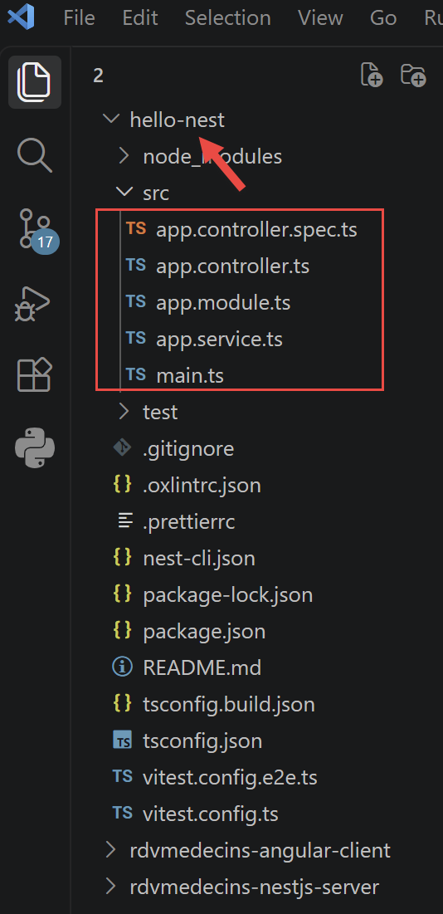
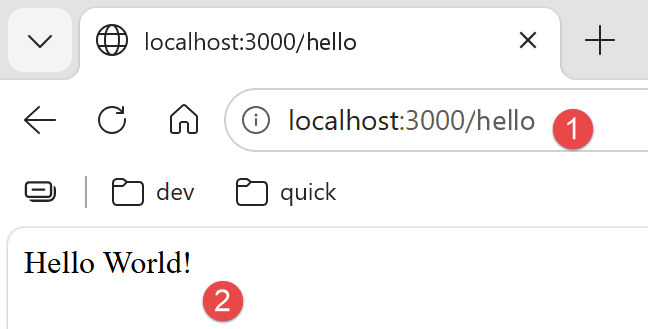

3. 第 2 章 - [NestJS] 简介
3.1. 资料来源
本章参考了以下资料：
- 官方 [NestJS] 网站：nestjs.com 及其文档 docs.nestjs.com；
- 该框架的 GitHub 仓库：github.com/nestjs/nest。
3.2. [NestJS] 在 Web 应用中的角色
[NestJS] 是一个用 TypeScript 编写的 Node.js 框架，用于构建 Web 应用的服务器端——最常见的是 REST API（JSON）。它并不重新发明 HTTP 协议的处理：默认情况下，它依赖 Express，这是一个更为基础的 Node.js 框架，负责接收原始 HTTP 请求并作出响应。[NestJS] 建立在此之上，提供了 Node.js 和 Express 本身都不强加的代码组织方式：划分为模块、控制器和服务；依赖注入；装饰器……
它的架构深受 [Angular] 启发（装饰器、模块、依赖注入）——阅读本课程 [Angular] 版本的读者会在客户端再次看到这种相似性。
[NestJS] 主要设计用于生成 JSON 响应：默认情况下，控制器方法返回的任何内容都会自动转换为 JSON 并发送给客户端，无需任何特殊配置。
3.3. [NestJS] 开发模型
三个概念构成了 [NestJS] 应用的结构：
- 模块 （@[Module] 装饰器）：模块把一组相互关联的功能组织在一起——它声明属于自己的控制器和服务、所需的其他模块，以及向其他模块提供什么。[NestJS] 应用总是从根模块 [AppModule] 开始，它汇集项目中的所有其他模块；
- 控制器 （@[Controller] 装饰器）：控制器是应用的入口点——一个类，其中每个方法接收与特定 URL 对应的 HTTP 请求，并向客户端返回响应；
- 提供者 （装饰器 @[Injectable]）：提供者是一个普通的类，通常负责业务逻辑或数据访问，[NestJS] 可以自动创建它，并将其提供（即“注入”）给任何需要它的控制器或服务。
在实践中，需要某个提供者的类只需在其构造函数中把它声明为参数——[NestJS] 会创建所需的实例并自动传入，您无需自己写 new：这称为 基于构造函数的依赖注入，在 NestJS 中几乎总是使用这种做法。
3.4. 第一个示例：“hello”迷你项目
为了巩固这三个概念，下面是一个非常小的 [NestJS] 项目，独立于案例研究（只有一个路由 /hello），您可以这样创建它（在 VSCode 中通过 [File/Open Folder] 打开一个空文件夹，在其中输入这些命令。这些命令会创建一个名为 [hello-nest] 的文件夹）：

该命令会生成一个包含以下关键文件的项目：[src/main.ts]、src/app.module.ts、src/app.controller.ts、src/app.service.ts。仅这四个文件就足以说明 [NestJS] 应用的架构：一个入口点（[main.ts]）、一个根模块（app.module.ts）、一个控制器（app.controller.ts）和一个服务（app.service.ts）。
3.4.1. 服务
// src/app.service.ts
import { Injectable } from '@nestjs/common';
@Injectable()
export class AppService {
getHello(): string {
return 'Hello World!';
}
}
- 第 2 行：每个用到的元素都要显式导入；这里从 [Injectable] 导入 [@nestjs/common]，该模块包含 [NestJS] 的大部分装饰器和工具类；
- 第 4 行：装饰器 是紧贴在 TypeScript 的类、方法或参数上方的注解（以 @ 符号开头），它在不改动其代码的情况下修改或增强其行为——几乎整个 NestJS 词汇体系都建立在这一机制之上。@[Injectable]() 将该类标记为 提供者：[NestJS] 会自行创建它，并自动提供给在构造函数中请求它的任何其他类，无需自己写 new [AppService]()；
- 第 6 行：: string 声明返回类型——这是 TypeScript 特有的功能，JavaScript 中没有。
3.4.2. 控制器
- 第 5 行：@Controller() 装饰其后的类，使其成为控制器：NestJS 会把与其路由对应的 HTTP 请求发送给它。括号中的参数是可选的前缀，会添加到该类所有路由的开头——这里为空：因此“hello”路由直接响应 /hello；
- 第 7 行：构造函数声明了一个类型为 appService 的参数 [AppService]，前面带有 TypeScript 修饰符 private readonly，它用一行代码同时声明该参数并将其注册为实例的属性（`this.appService`）。[NestJS] 判断出该控制器需要一个 [AppService]，创建它的一个实例（单一实例，由整个应用共享），并在此自动提供：这就是前面提到的基于构造函数的依赖注入；
- 第 9 行：[@Get]('hello') 将其后的方法与路由 HTTP GET /hello 关联：服务器运行后，该装饰器使该动作可通过可测试的地址 http://localhost:3000/hello 访问。其他装饰器对其他 HTTP 动词起相同作用：@[Post]()、@Put()、@Delete()、@Patch()（在案例研究中，我们会对 /addAppointment 和 /deleteAppointment 使用 @[Post]()）。请注意，第 10 行中的方法名 [getHello] 无关紧要，可以是任何名称；
- 第 11 行：控制器把工作委托给注入的服务，而不是自己编写响应：它仍然只是一个简单的路由层，业务逻辑则位于服务中——我们会在第 3 章的案例研究中以更大的规模看到这一原则。
3.4.3. 模块
- 第 6 行：@[Module]({...}) 装饰其后的类，将其变成模块：它把应用中一个内聚的部分组合在一起，并在作为参数传入的对象中声明其组成。可以有四个属性：controllers （该模块公开的控制器）、providers （该模块提供的服务，可在模块内注入）、imports （该模块依赖的其他模块）和 exports （该模块向导入它的模块开放的提供者）；
- 如果没有 `controllers: [AppController]` 这一行，`[NestJS]` 会忽略该控制器，其路由不会响应任何请求；如果没有 `providers: [AppService]`，控制器的依赖注入会在启动时失败。
3.4.4. 执行
在 VSCode 中，在 [hello-nest] 文件夹根目录下启动的终端中，输入以下命令：
在浏览器中打开 http://localhost:3000/hello ，会得到如下响应：

3.5. 提供者和依赖注入
用 @[Injectable]() 标注的类就是提供者：[NestJS] 知道如何实例化它，并在任何构造函数请求它的地方自动注入，前提是它出现在模块的 providers 数组中。默认情况下，[NestJS] 提供者是 单例：应用启动时只创建一个实例，所有需要它的组件共享同一个实例——这一点对理解案例研究（第 3 章）中 [ApplicationModelService] 服务的作用很重要，该服务在服务器启动时缓存数据。
3.6. 案例研究中还会出现的其他装饰器
装饰器 | 作用 |
将控制器方法与 HTTP 路由关联 | |
从 URL 中获取可变片段，例如 /getDoctorById/:id | |
获取 POST 请求的 JSON 请求体，并反序列化为一个类 | |
声明一个提供者（服务、DAO……） | |
声明一个模块，即控制器和提供者的集合 |
这些装饰器会在它们于 [RdvMedecins] 服务器代码中出现的确切位置逐一详细讲解（第 3 章）。